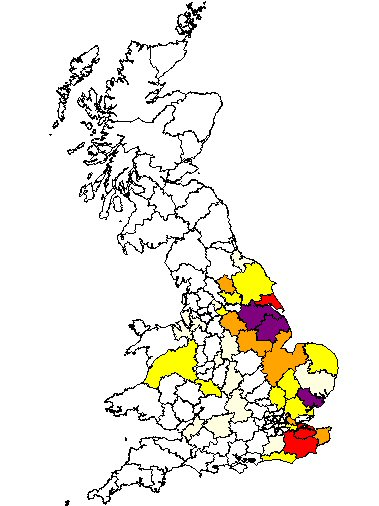

Our Drury family is well rooted in Lincolnshire and can be traced back to Robert Drewry, born about 1685. He married Catherine Hanson of Bottesford, Leicestershire. Their son Robert became Sheriff of Lincoln and its Mayor in 1761.
William Drury, born in 1744 in Brant Broughton, was a shoemaker. His son John became a farm servant for William Blow, farmer at Housham Grange, Lincolnshire — a connection that proved pivotal when Blow's will left the farm to "his friend and old servant John Drury".
John's son William Drury (1833–1891) moved the family from rural Lincolnshire to Nottingham. His sons Tom Drury and William (Bill) Drury both served in the First World War.